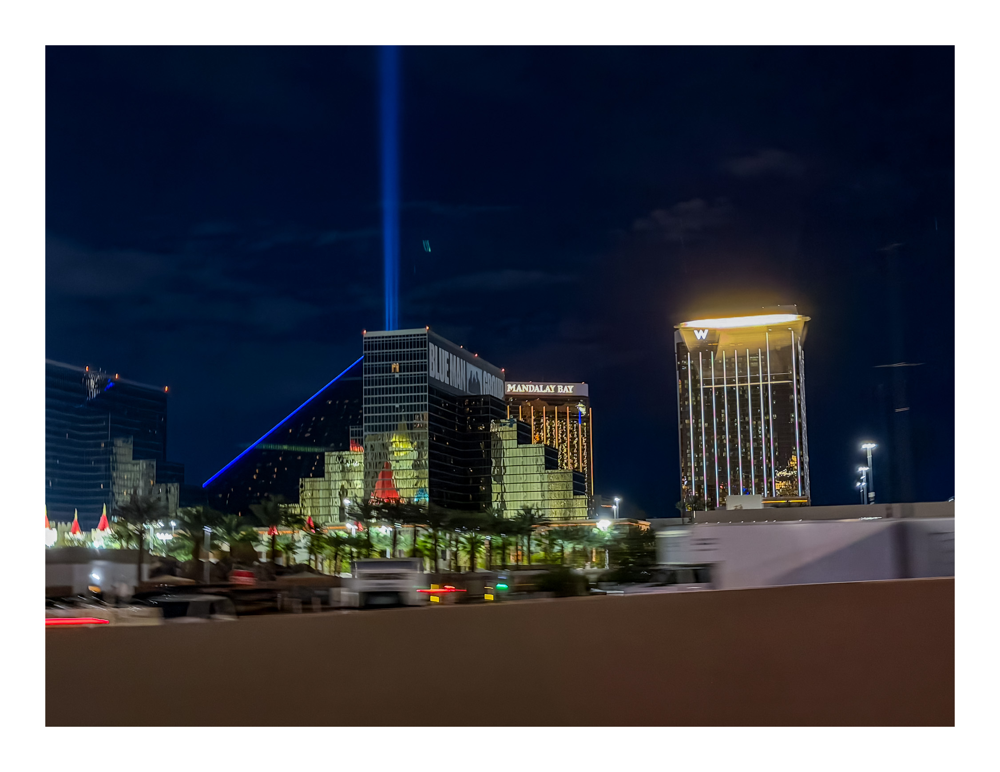

Iconic Views
Strong framing, clean sky, and timeless landscape energy.
I create photography that feels bold, natural, and memorable — from landscapes and city scenes to visuals that tell a story with mood, detail, and style.
A curated collection of the strongest images in my portfolio — chosen to show atmosphere, detail, and the visual style I’m building.

Strong framing, clean sky, and timeless landscape energy.

Bright color, texture, and depth through natural light.

Movement in the water with a darker, more dramatic feel.

Natural scale, depth, and cinematic scenery.

Urban light, contrast, and a city feel after dark.

Vibrant scenes that feel alive, bright, and memorable.

Close-up work that captures texture, focus, and color.

Detail-focused shots with depth and rich visual texture.
I’m Jonathan, a photographer based in California. I’m focused on creating images that feel cinematic, polished, and honest. My goal is not just to take a photo, but to make it feel like a moment worth remembering.
I pay attention to light, framing, color, and detail so each image feels intentional. Whether I’m shooting landscapes, city scenes, or future client work, I want the final result to feel clean, strong, and visually memorable.
“More than just taking pictures, my goal is to create images people can feel.”
Jonathan Rico PhotographyIf you want to work with me, ask about a shoot, or connect about future projects, message me on Instagram.